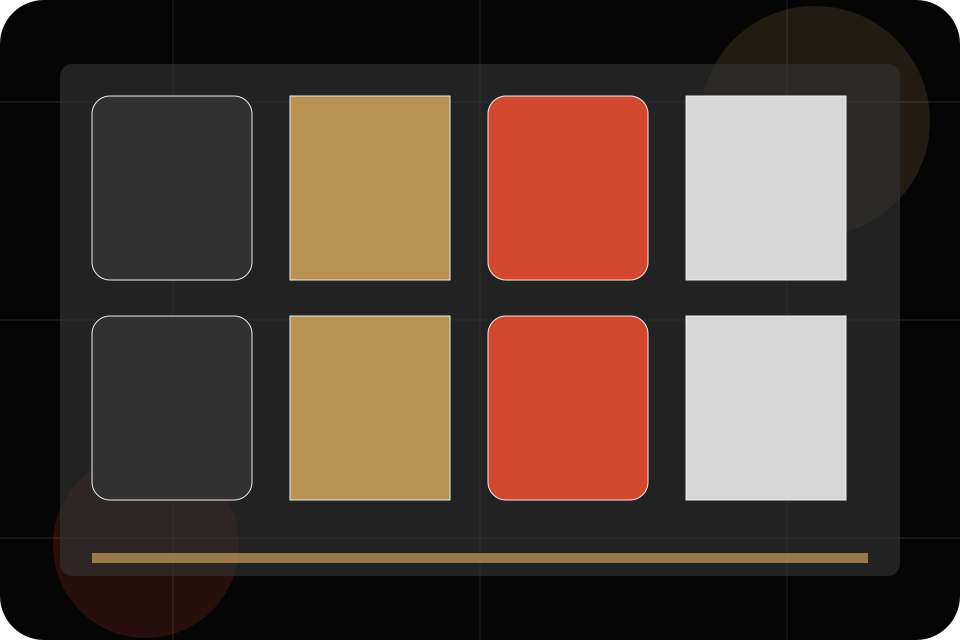
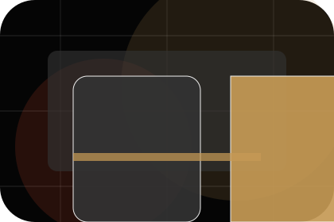
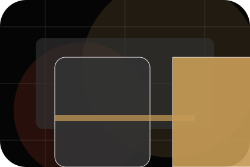
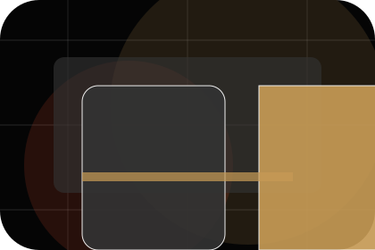
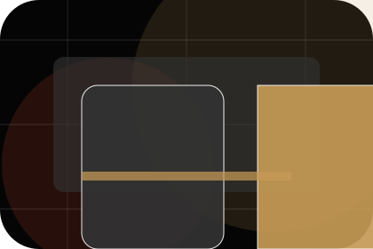
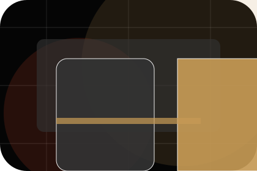
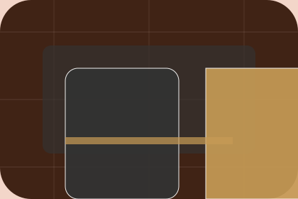

Venue / 01
Venue by Stage
Venue shaped for entertainment, music & performance decisions.
Venue opens as a clear entertainment decision hub: what Stage offers, who it helps, why it matters, and which route to take first.
The first screen combines positioning, proof, primary action, and fast internal navigation, so people can act immediately or compare the rest of the venue route with context.
Exposure reviewControl planResponse route
Dark poster hero
Choose ticket fit
Select the closest route and Stage keeps the next step, proof, and follow-up expectation aligned with excitement and access.

Venue / 02
Story inside venue
Story adds dark context to the venue route, using the indie film poster system structure to support excitement and access before visitors choose a next step.
Stage uses poster event cards and focused copy to make the decision easier to scan, aligning the section with excitement and access rather than filling space.
Explore VenueStory gives the page a specific angle instead of repeating the navigation label.
The poster event cards show what to compare, what to avoid, and what matters most for entertainment, music & performance visitors.
The final cue points to a useful internal route so the section keeps the journey moving.
Venue / 03
Stage inside venue
Stage adds dark context to the venue route, using the indie film poster system structure to support excitement and access before visitors choose a next step.
Stage uses poster event cards and focused copy to make the decision easier to scan, aligning the section with excitement and access rather than filling space.
Explore VenueContext
Stage gives the page a specific angle instead of repeating the navigation label.
Judgment
The poster event cards show what to compare, what to avoid, and what matters most for entertainment, music & performance visitors.
Direction
The final cue points to a useful internal route so the section keeps the journey moving.
Venue / 04
Sound inside venue
Sound adds dark context to the venue route, using the indie film poster system structure to support excitement and access before visitors choose a next step.
Stage uses poster event cards and focused copy to make the decision easier to scan, aligning the section with excitement and access rather than filling space.
Explore VenueContext
Sound gives the page a specific angle instead of repeating the navigation label.
Judgment
The poster event cards show what to compare, what to avoid, and what matters most for entertainment, music & performance visitors.
Direction
The final cue points to a useful internal route so the section keeps the journey moving.
Venue / 05
Who handles team
Team introduces the people, roles, or specialist credibility behind Stage so the decision feels less anonymous.
The copy ties names, roles, credentials, or availability back to the decision on the page instead of treating profiles as decorative biographies.
Explore Venue

Role
The person, team, or specialist function connected to team is easy to understand.
Venue / 06
Values inside venue
Values adds dark context to the venue route, using the indie film poster system structure to support excitement and access before visitors choose a next step.
Stage uses poster event cards and focused copy to make the decision easier to scan, aligning the section with excitement and access rather than filling space.
Explore VenueContext
Values gives the page a specific angle instead of repeating the navigation label.

Judgment
The poster event cards show what to compare, what to avoid, and what matters most for entertainment, music & performance visitors.

Direction
The final cue points to a useful internal route so the section keeps the journey moving.
Venue / 07
Facilities inside venue
Facilities adds dark context to the venue route, using the indie film poster system structure to support excitement and access before visitors choose a next step.
Stage uses poster event cards and focused copy to make the decision easier to scan, aligning the section with excitement and access rather than filling space.
Explore VenueContext
Facilities gives the page a specific angle instead of repeating the navigation label.
Judgment
The poster event cards show what to compare, what to avoid, and what matters most for entertainment, music & performance visitors.

Direction
The final cue points to a useful internal route so the section keeps the journey moving.
Venue / 08
Reputation inside venue
Reputation adds dark context to the venue route, using the indie film poster system structure to support excitement and access before visitors choose a next step.
Stage uses poster event cards and focused copy to make the decision easier to scan, aligning the section with excitement and access rather than filling space.
Explore VenueContext
Reputation gives the page a specific angle instead of repeating the navigation label.
Judgment
The poster event cards show what to compare, what to avoid, and what matters most for entertainment, music & performance visitors.
Direction
The final cue points to a useful internal route so the section keeps the journey moving.
Venue / 09
Trust, not claims
Trust gives the proof layer for venue: standards, evidence, and reassurance that make the next decision feel grounded.
Instead of relying on vague claims, Stage presents visible standards, process cues, and proof artifacts that help entertainment visitors judge fit.
Explore VenueEvidence
Visible proof that helps visitors believe the claims behind trust.
Standard
The quality, safety, or operating expectation this section makes explicit.
Reassurance
What becomes clearer before someone decides whether to view tickets.
Venue / 10
View Tickets
Stage closes the venue route with a clear action, a quick reminder of the value, and a low-friction way to view tickets.
Visitors who are ready can use the primary action. Visitors who are still comparing can scan the section links, proof, and support routes before they view tickets.
View TicketsThe final block keeps the choice simple: act now, compare one more proof route, or send enough detail for a focused response.
View Ticketsexcitement and access
View Tickets
An entertainment site with film-poster rhythm, dark editorial cards, ticket routes, and venue proof. Venue ends with a direct path to view tickets, plus enough context for visitors who still need to compare.

View Tickets